Professional reference guide for end users of the Covoit web application. This document explains how to access the platform,
manage an account, search and reserve trips, follow driver workflows, and use in-app messaging confidently across desktop and mobile.
Web AppDriversPassengersChatBookingsAccount
Product
Covoit Frontend
Audience
Passengers, drivers, support staff, and onboarding teams
Supported Interface
Responsive web application for desktop and mobile browsers
Languages
English, French, and Arabic
Document Purpose
End-user operational guide for everyday platform usage
Covoit is a responsive carpooling interface designed to support both passengers and drivers from a single account area. The frontend gives
users a structured path from authentication to day-to-day trip coordination.
Main capabilities
Create an account, sign in, and recover access through password reset flows.
Complete a user profile before entering the main application.
Search available trips and compare practical route details before booking.
Reserve and review upcoming bookings when booking permissions are enabled.
Publish, manage, and cancel driver trips when driver permissions are enabled.
Use an integrated chat inbox and live conversation screen with unread indicators.
Maintain personal details, vehicle information, and language preference.
The visible sections of the application depend on the permissions attached to the authenticated user account. Some users will only see
passenger flows, while others will also see driver and booking management areas.
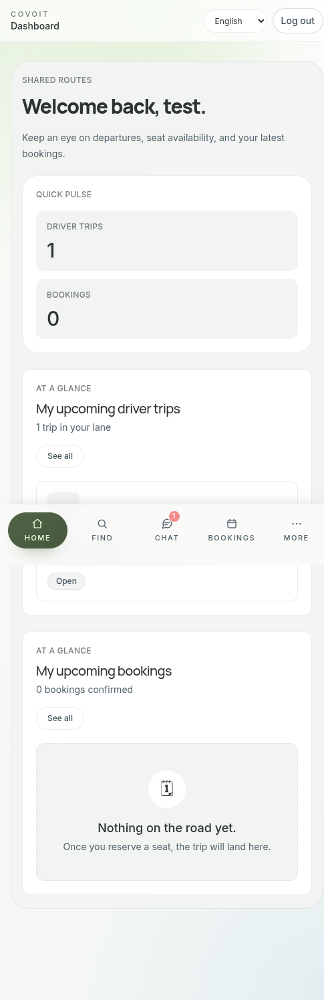
Mobile dashboard example showing the authenticated home experience.
Getting Started
1. Sign in or create an account
Open the application in your browser.
Select Login if you already have an account, or Register if you are new.
Enter your email address and password.
Submit the form to access the platform.
2. Recover access if needed
If you cannot sign in, use the Forgot Password page to request a reset link. After opening the reset link, enter a new password
and confirm it to restore access.
3. Complete your profile
New users may be redirected to the profile completion screen before the main dashboard becomes available. This step ensures the account has the
essential identity information required by the platform.
A profile that is not fully completed may block access to protected sections of the application.
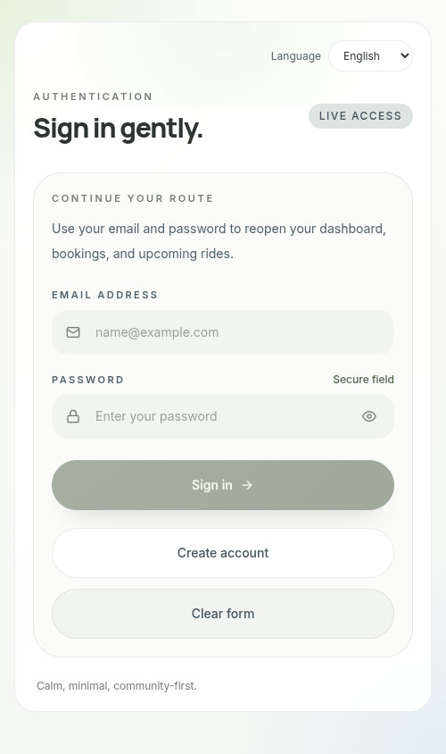
Login screen on mobile.
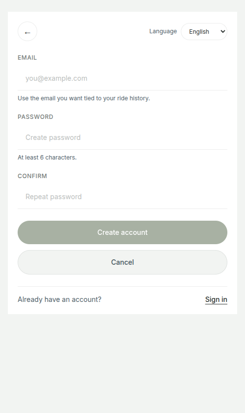
Registration screen on mobile.
Navigation and Layout
The frontend is responsive and adapts navigation based on screen size. On desktop, navigation appears in the top application header. On mobile,
the app uses a bottom navigation pattern with a More entry for overflow destinations.
Primary navigation areas
Home - Dashboard and key activity summary
Find Trip - Search form and trip discovery
Chat - Inbox and direct conversations
Bookings - Passenger reservation history and details
My Trips - Driver trip management
My Account - Profile, vehicle, and account settings
Main mobile shell and bottom navigation.
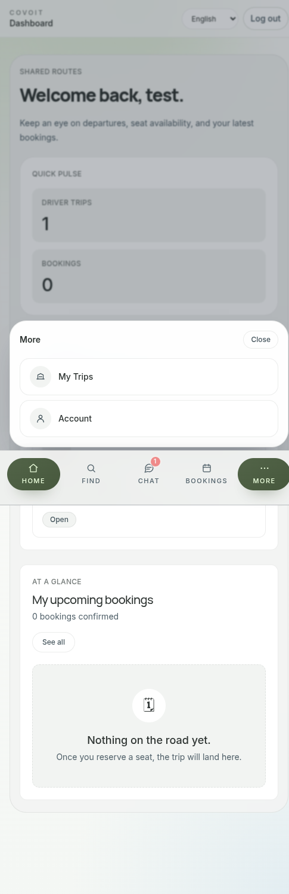
Expanded More menu for overflow navigation destinations.
Dashboard
The home page acts as a control center. It highlights upcoming activity, such as driver trips and bookings, and provides direct access to the
most relevant next actions for the current user.
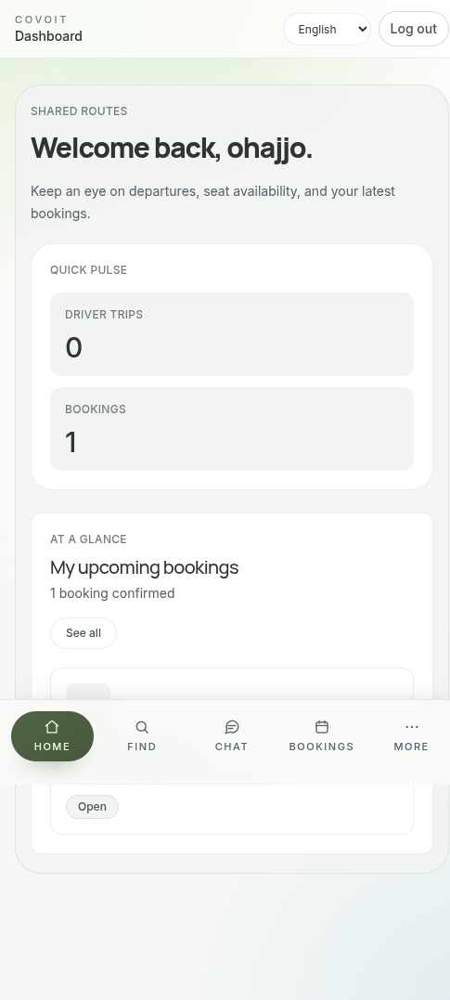
Passenger dashboard on mobile.Driver dashboard on mobile.
Passenger Journey
Search for a trip
Open Find Trip.
Choose a departure city and an arrival city.
Select the desired date.
Run the search to view matching rides.
Review search results
The results page presents available trips in an easy-to-scan list. Each item is designed to help the user evaluate route and availability before
opening the full trip details page.
What to check before booking
Departure and arrival timing
Remaining available seats
Route context and city information
Driver-facing details shown in the trip card or details view
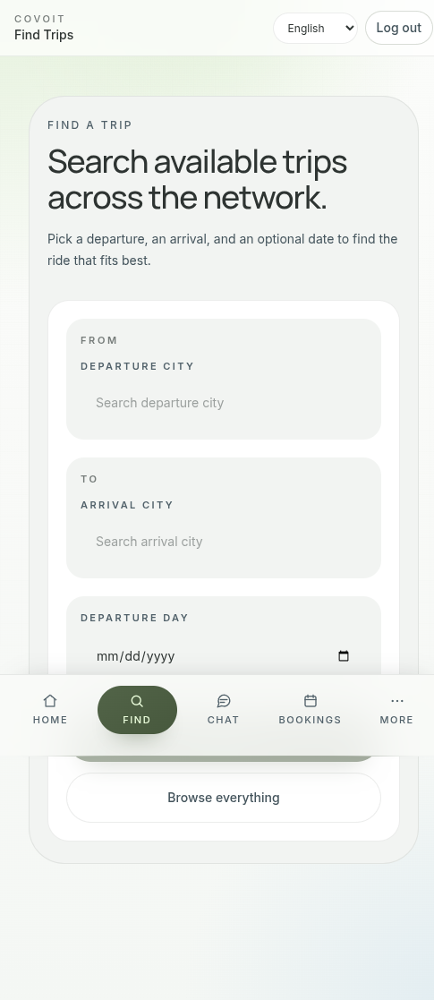
Trip search form.
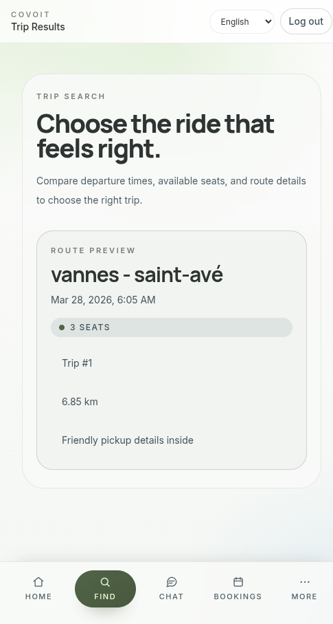
Trip search results list.
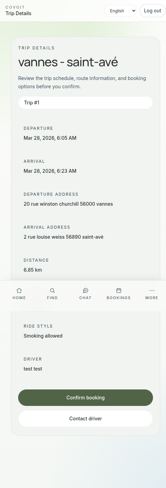
Trip details before booking.
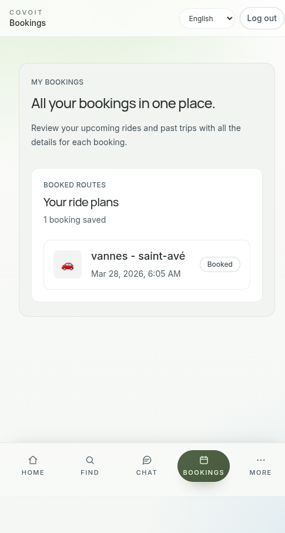
Bookings overview for passengers.
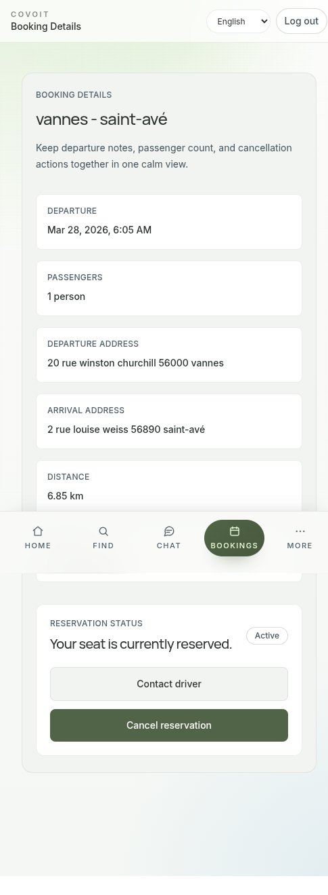
Booking details page.
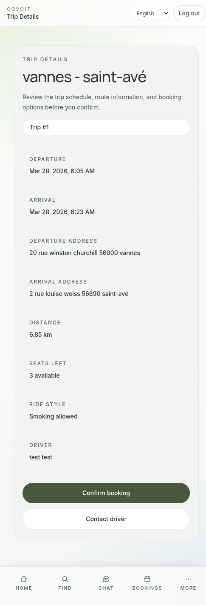
Trip page after an existing reservation is detected.
Book a seat
After opening a trip detail screen, the passenger can continue with the booking action when seats are available and the account is allowed to
make reservations.
Review bookings
The Bookings area centralizes reserved rides. Users can review current plans and revisit the information associated with each trip.
Driver Journey
Publish a trip
Open My Trips and choose the create or publish action.
Fill in route, timing, vehicle, and seat information.
Review the entered details carefully.
Submit the form to publish the trip.
Manage existing trips
Drivers can use the My Trips section to review active trips, inspect passenger-related context, and handle updates or cancellations.
Trip detail management
Typical driver actions
Review route and trip schedule details
See passenger-related trip information
Cancel a trip when required
Open a conversation with a passenger from the dedicated contact flow
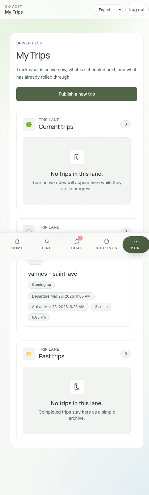
Driver trip list.
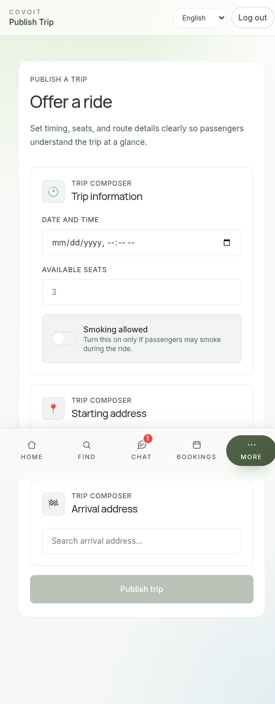
Trip publication form.
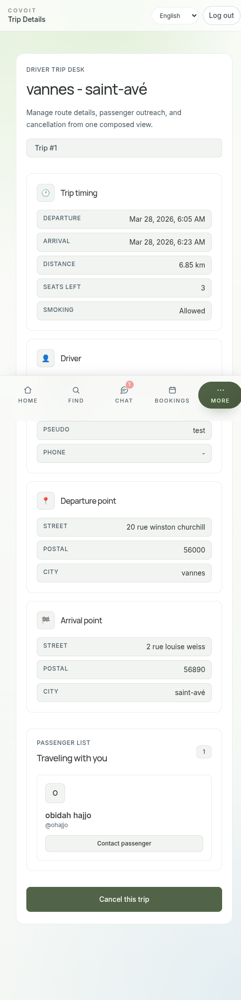
Driver trip details view.
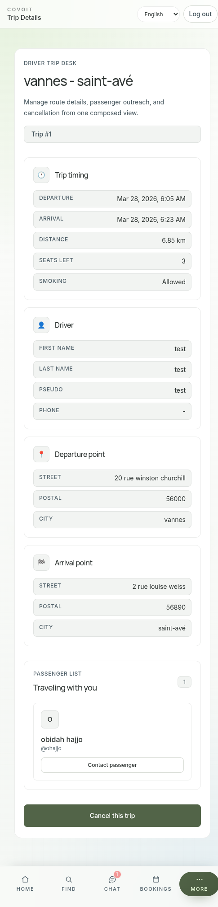
Passenger list and driver actions inside a trip.
Chat and Notifications
The chat module provides an inbox view and dedicated conversation screens. It supports unread badges, direct message sending, and user-specific
conversation management tools.
Inbox behavior
Unread conversations display an unread indicator.
Desktop navigation also shows the unread badge for the chat section.
Incoming alerts can appear briefly when a new unread conversation update is detected.
Conversation features
Send messages in real time when the backend channel is connected.
Continue working even if the app temporarily falls back to periodic refreshes.
Clear a full conversation for your account only.
Select one or more individual messages to clear them for your account only.
Long-press on touch devices to start message selection.
Copy one selected message at a time through the selection bar.
Message clearing is user-specific. Clearing a conversation or selected messages does not remove them for the other participant.
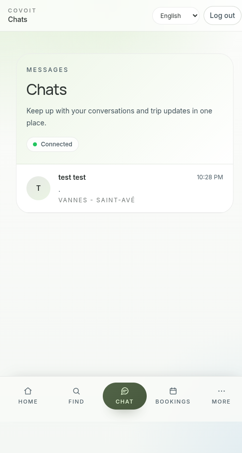
Chat inbox on mobile.
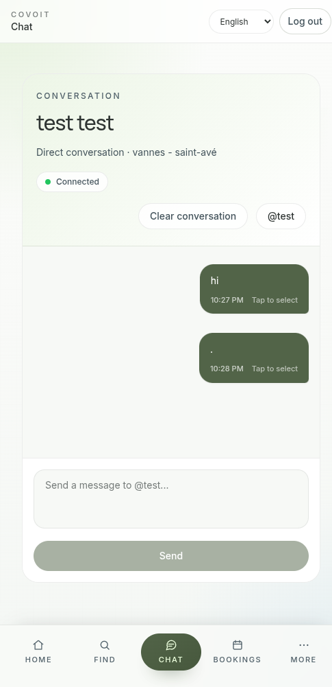
Conversation screen with message composer.
Account and Profile Management
Profile updates
The My Account page is the main place for maintaining personal information such as identity details and public-facing profile data.
Vehicle information
When vehicle editing is enabled, the account page also supports car information management so rides remain identifiable to passengers.
Danger zone
The profile screen includes a visually distinct danger section for destructive account actions. Users should review that section carefully before
confirming account deletion.
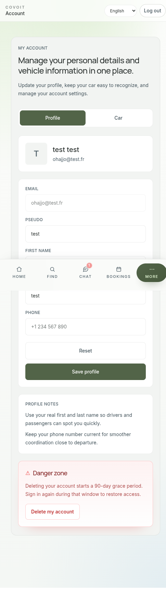
Account and profile page on mobile.
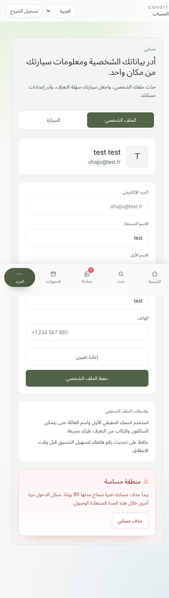
Arabic language and right-to-left account view.
Language and Accessibility
The application currently supports English, French, and Arabic. The language switcher is available in the app shell and key
authentication screens.
Language behavior
The selected language is stored in the browser for future visits.
Arabic uses right-to-left document direction automatically.
Date and time formatting follows the selected locale.
Arabic mode example showing translated content and right-to-left layout.
Troubleshooting
Common issues and responses
I cannot sign in: verify credentials, then use the password recovery flow if necessary.
I cannot access the dashboard: complete the required profile fields first.
I cannot see My Trips or Bookings: the account may not have the permissions required for that area.
Chat shows updating instead of connected: the app may be using fallback refresh behavior instead of a live channel.
Unread badges look inconsistent: refresh the page and confirm the conversation was not already opened on the same account.
Copy message is unavailable: select exactly one message before using the copy action.
If a user reports missing pages, always confirm whether the issue is caused by permissions rather than a visual or navigation failure.
Support Recommendations
This guide is most useful for onboarding, demos, support handoff, and internal product reviews. For implementation-level details such as routing,
providers, APIs, or deployment assumptions, pair it with the technical documentation in the project README.
Additional recommended captures can still be added later for the complete profile screen, desktop layouts, the vehicle tab, and the final multi-selection copy state in chat.